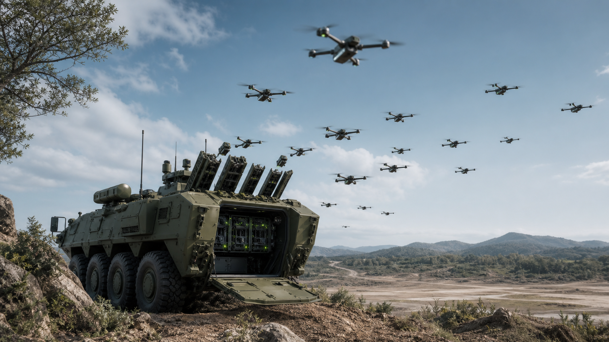
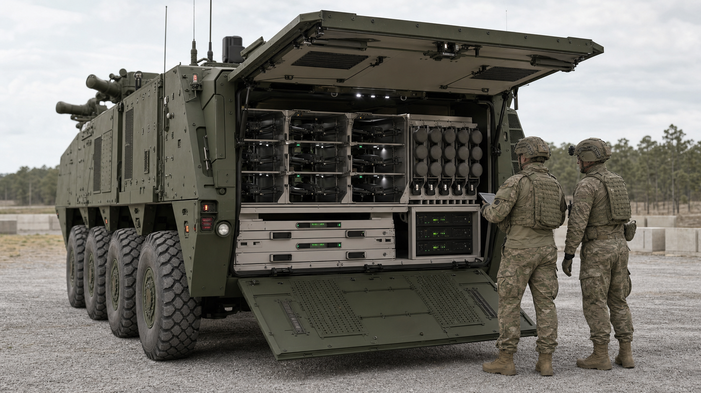
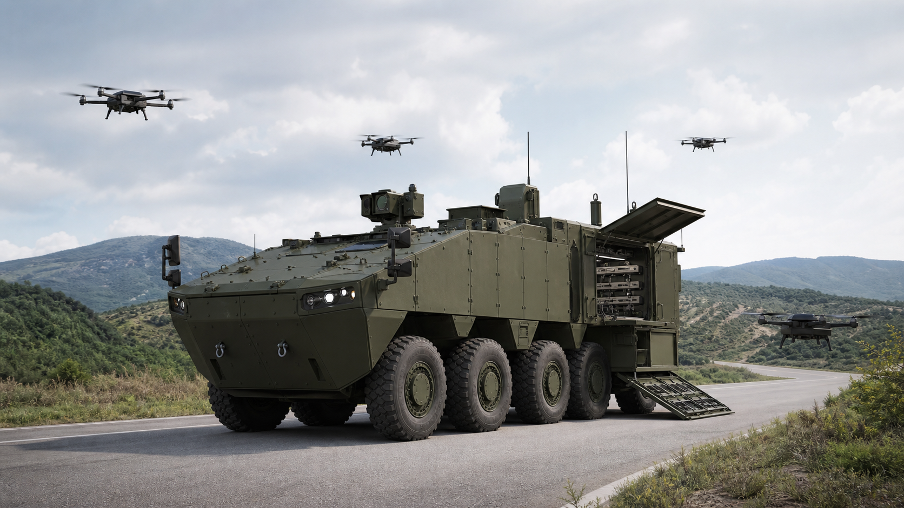

핵심 결론
본 사업은 단순 드론 탑재 차량이 아니라, 장갑기동부대와 함께 움직이는 저장·충전·발사·통제·데이터연동 플랫폼으로 기획해야 한다.
전장 변화
FPV 드론, 자폭드론, 배회형 탄약, 군집드론이 대량 소모형 전력으로 확산되고 있다. 기존 장갑차는 이러한 드론을 다수 운용하기 위한 전원, 통신, 임무공간이 부족하다.
개발 방향
기존 차륜형장갑차의 후방 병력공간을 드론 저장고, 자동발사기, 충전장치, 데이터링크, AI 임무관리 서버로 전환하는 개조개발 방식이 현실적이다.
사업 규모
소형 실증보다 군 운용시험이 가능한 중형 시제개발이 적정하다. 총사업비는 요구성능과 시제수량에 따라 크게 달라진다.
1. 해외 시장 분석
드론은 보조 정찰수단에서 전술부대의 상시 감시·표적획득·타격 수단으로 전환되고 있다.
러시아-우크라이나 전쟁은 드론의 전장화가 일시적 현상이 아니라 지상전의 구조적 변화임을 보여준다. 소형 상용 드론, FPV 드론, 자폭드론, 장거리 일회용 드론이 동시에 운용되면서 전장의 감시, 표적획득, 타격, 전자전 기능이 저비용·고빈도 방식으로 수행되고 있다.
미국
미 국방부 Replicator Initiative는 단기간 내 다수의 소모성·자율 무인체계를 배치하려는 정책이다. DARPA OFFSET은 도시지역에서 다수 소형 무인체계의 군집운용을 실험했고, CCA 프로그램은 유인 항공기와 협동하는 무인전투항공기 방향을 제시한다.
관련 기업으로는 Anduril, AeroVironment가 있으며, Switchblade 계열 배회형 탄약과 Lattice 기반 임무통제는 군집드론 차량의 통제·타격 개념과 연결된다.
중국·러시아
중국은 CH 시리즈, ASN 계열, 상용 드론 생태계를 기반으로 대량 생산과 수출경쟁력을 보유한다. 군집드론 시범과 대량 운용 개념도 공개되어 왔다.
러시아는 Lancet 배회형 탄약, FPV 드론, Molniya 계열 저가 고정익 드론을 통해 저가·대량·소모형 전술을 강화하고 있다.
이스라엘
IAI Harop·Harpy 계열과 Elbit SkyStriker는 배회형 탄약의 대표 사례이다. 이스라엘 사례는 차량 탑재 발사, 전술 지휘통제, 정찰-타격 통합 측면에서 참고 가치가 크다.
유럽·NATO
NATO DIANA는 신흥기술 기업과 국방 수요를 연결하는 혁신 네트워크이다. Boxer Mission Module, RCH155, Mission Master UGV는 모듈화, 개방형 전자구조, 유무인복합 운용의 참고사례이다.
진입 추진 국가 예비 분석
| 국가 | 운용현황 | 위협수준 | 도입가능성 | 시장성 | 비고 |
|---|---|---|---|---|---|
| 폴란드 | 우크라이나 인접, 드론·대드론·기갑전력 확충 | 매우 높음 | 높음 | 높음 | 한국 방산 협력 기반 존재 |
| 루마니아 | 흑해·NATO 동부전선 강화 | 높음 | 중간~높음 | 중간 | 감시정찰형 수요 예상 |
| 발트 3국 | 분산방어와 소형 드론 관심 높음 | 매우 높음 | 중간 | 중간 | 경량·모듈형 패키지 적합 |
| 핀란드 | 러시아 접경, 혹한 지상전 대비 강화 | 높음 | 중간 | 중간 | 혹한·분산전 요구 |
| 호주 | 인도태평양 감시정찰·무인체계 관심 | 중간 | 중간 | 중간~높음 | 한국 장갑차 협력 경험 활용 가능 |
| 사우디·UAE | 드론·미사일 위협 경험, 무인체계 투자 확대 | 높음 | 중간 | 높음 | 현지화·공동개발 요구 가능 |
| 인도 | 국경분쟁과 고산·사막지형 운용 수요 | 높음 | 중간 | 높음 | 기술이전·현지생산 요구 가능 |
2. 해외 경쟁체계 분석
해외 사례의 공통점은 후방 임무공간 확대, 임무모듈화, 개방형 전자구조, 자동화된 발사·통제 기능이다.

| 체계 | 핵심 특징 | 본 사업 시사점 | 원문 확인 |
|---|---|---|---|
| Stryker 기반 드론 플랫폼 | 8×8 장갑차 내부공간·전력·전자구조를 활용한 무인체계 운용 개념. StrykerX 계열은 하이브리드 전원, 개방형 전자구조, 드론 운용을 강조한다. | 병력공간을 임무통제석, 드론랙, 발사기, 배터리 관리공간으로 전환하는 방향 참고. | GDLS |
| Leonidas | Epirus의 고출력 마이크로파 기반 대드론 체계. 군집드론 대응과 전자장비 무력화 개념을 제시한다. | 군집드론 운용차량도 대드론 방호·전자전 연동을 초기 요구에 반영해야 한다. | Epirus |
| PIRANHA 10×10 | 대형 차륜형 플랫폼의 높은 적재중량과 후방 임무공간을 활용하는 구조. | 후방 드론 저장고와 임무모듈의 확장성 확보 필요. | GDELS |
| RCH155 | Boxer 기반 원격조종 155mm 포탑 모듈. 승무원 공간과 임무공간 분리, 자동화 임무모듈 통합 사례. | 드론 임무모듈도 차량 플랫폼과 가능한 한 분리 설계하는 것이 유리하다. | KNDS |
| Boxer Mission Module | 구동모듈과 임무모듈 분리. 임무 변경에 따라 후방 모듈 교체 가능. | 정찰형, 공격형, 통신중계형, 대드론형 모듈로 확장 가능. | ARTEC |
| Patria 6×6 / VBTP Guarani | 중저가 차륜형 플랫폼의 병력수송·임무개조 가능성. | 6x6급 또는 6×6급 수출형 파생모델 검토 가능. | Patria |
| JLTV 드론모함 개념 | 경전술차량에 소형 UAS, 배회형 탄약, 발사튜브, 통신중계장비를 결합하는 개념. | 중형 차륜형장갑차형은 전방 장갑기동부대용 중형 허브, JLTV형은 저비용 신속전개형으로 차별화. | Oshkosh |
| Mission Master UGV | 무인지상차량 기반 정찰·수송·화력지원·대드론 임무킷 확장. | 드론모함차량이 UGV와 함께 전개·중계·회수하는 복합 운용으로 발전 가능. | Rheinmetall |
경쟁체계 공통 특징
3. 차륜형장갑차 기반 개조개발 필요성
기존 차륜형장갑차의 후방 병력공간을 군집드론 임무공간으로 전환하면 신규 차체 개발보다 위험과 기간을 줄일 수 있다.

현재 문제점
국내 지상군에는 장갑기동부대와 함께 움직이며 다수 드론을 저장·충전·발사·통제하는 전용 플랫폼이 부족하다. 일반 차량 또는 병력수송 차량에 임시 적재하는 방식은 전원, 통신, 안전관리, 작전지속성 측면에서 한계가 있다.
드론 운용팀이 비장갑 차량이나 야외 임시진지에서 임무를 수행하면 포격, 파편, FPV 드론 위협에 취약하다. 장갑차 기반 플랫폼은 운용팀을 보호하면서 전방 ISR과 표적획득 범위를 확대할 수 있다.
개조개발 논리
현재 전장 변화 → 군집드론 확대 → 기존 장갑차 한계 → 전용 플랫폼 필요 → 국내 개발 필요
국내에는 장갑차, 드론, 데이터링크, AI 소프트웨어, 전술통신, 체계통합 역량이 존재한다. 기존 차륜형장갑차를 활용하면 국내 지상군 전술체계와 보안요구에 맞춘 통합이 가능하다.
차량 내부 배치 개념
유무인복합작전 네트워크 개념
4. 예상 사업비
공개 유사사업과 방산 연구개발 비용 구조를 참고한 기획단계 추정치이다. 실제 사업비는 요구성능, 시제 수량, 드론 포함 여부에 따라 달라진다.
| 항목 | 소형 | 중형 | 대형 | 산정 근거 |
|---|---|---|---|---|
| 체계설계 | 20억 | 40억 | 70억 | 요구분석, 기본설계, 상세설계, 안전성 분석 |
| 임무컴퓨터 | 15억 | 35억 | 60억 | 차량 내부 통제콘솔, 서버, 영상처리장비 |
| AI 소프트웨어 | 20억 | 60억 | 120억 | 임무계획, 다중드론 상태관리, 운용자 화면 |
| 데이터링크 | 20억 | 50억 | 100억 | 전술통신, 안테나, 보안모듈, 중계기능 |
| 드론발사기 | 25억 | 70억 | 140억 | 자동발사대, 캐니스터, 안전장치 |
| 차량개조 | 30억 | 80억 | 150억 | 내부공간 개조, 전원, 냉각, 방호, 배선 |
| 시제제작 | 60억 | 180억 | 350억 | 시제차량, 임무모듈, 통합장비, 예비품 |
| 시험평가 | 30억 | 80억 | 160억 | 성능시험, 환경시험, 전자파, 주행, 발사 안정성 |
| 군 운용시험 | 20억 | 60억 | 120억 | 부대 운용시험, 교육, 정비, 데이터 수집 |
| 합계 | 240억 | 655억 | 1,270억 | 기획단계 범위 추정 |
5. 과제카드 이미지 기획안
중요한 글자와 숫자는 이미지에 넣지 않고 HTML 또는 PPT 텍스트로 별도 배치한다. 생성 이미지는 실제 기밀 장비로 오해되지 않는 일반 컨셉으로 제한한다.

이미지별 생성 프롬프트
차륜형장갑차 기반 군집드론 모함차량
후방 드론 컨테이너 개방 장면
군집드론 동시 발사 장면
전장 네트워크 구성도
6. 참고문헌 및 원문 링크
가능한 공식기관과 업체 원문을 우선 배치했다. PDF는 기관 게시판에서 제목 기준으로 최신본을 재확인하는 방식이 필요하다.
PDF 확보 우선순위
| 우선순위 | 기관 | 확보 권장 자료 | 활용 목적 |
|---|---|---|---|
| 1 | 국방기술품질원 | 국방과학기술조사서, 글로벌 국방기술 동향 | 국내 기술수준, 기술동향 근거 |
| 2 | 국방기술진흥연구소 | 국방기술기획서, 미래도전국방기술 자료 | 과제카드 문체와 기술기획 논리 반영 |
| 3 | 방위사업청 | 차륜형장갑차 전력화, 드론봇·무인체계 보도자료 | 국내 사업 필요성 및 전력화 근거 |
| 4 | KIDA | 미래전, 유무인복합체계, 네트워크 중심전 연구 | 정책·전략적 필요성 근거 |
| 5 | 국회예산정책처 | 국방예산 분석, 방위력개선사업 분석 | 사업비 추정과 예산 논리 보강 |
| 6 | NATO / RAND / CSIS | 무인체계, 우크라이나 전쟁 교훈, 방산혁신 보고서 | 해외 시장·전장 변화 분석 근거 |